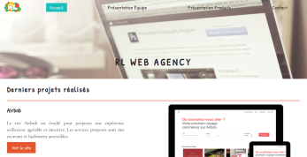
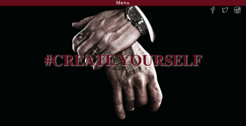
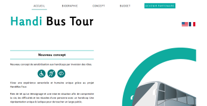
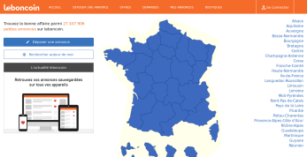
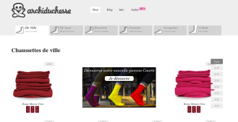
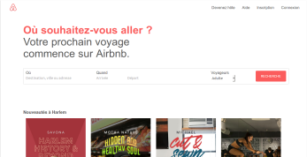

Web Agency  Este site apresenta uma agencia web, criado por Yuran Ramos com a parceria de Florent Lequibain. Projeto em grupo feito para na semana n°6 da formaçao de Simplon Roubaix.
Tattoo  Este site apresenta Tattoo, criado por Yuran Ramos. Projeto feito na semana n°5 da formaçao de Simplon Roubaix.
Handi Bus Tour  O projeto Handibus é um novo conceito de sensibilizaçao aos portadores de dificiência por inverçao de papei. Projeto feito na semana n°7, realizado em grupo de quatro (Simplom roubaix e Showroom privé)
Leboncoin  Reproduçao do site leboncoin.fr feito por Yuran Ramos, projeto realizado na semana n°6 da formaçao de Simplon Roubaix.
Archiduchesse  Reproduçao do site archiduchesse.com feito por Yuran Ramos, projeto realizado na semana n°5 da formaçao de Simplon Roubaix.
Air Bnb  Reproduçao do site airbnb.be feito por Yuran Ramos, foi meu primeiro site 100% responsivo. Projeto realizado na semana n°4 da formaçao de Simplon Roubaix.